|
|
| ascidians text index | photo index |
| Phylum Chordata | Subphylum Tunicata/Urochordata | Class Ascidiacea |
| Green
gum drops ascidians Diplosoma sp. Family Didemnidae updated Nov 2019 Where seen? These little ascidians that resemble green sweets are commonly seen, especially on our Southern shores. Features: Each blob about 1cm long. Flat, irregular shapes with rounded margins so that each shape resembles a gum drop. Each shape appears to be made up of many individual zooids embedded in a common tissue. The shapes are arranged higgledy-piggledy in crowded clusters on seagrasses such as Tape seagrass (Enhalus acoroides), seaweeds as well as on coral rubble. It's hard to identify ascidians without close examination of small features. On this website, they are grouped by large external features for convenience of display. |
|
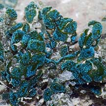 Beting Bronok, Aug 05 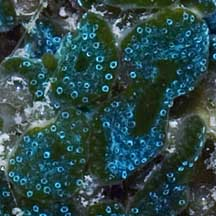 |
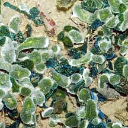 Kusu Island, May 07 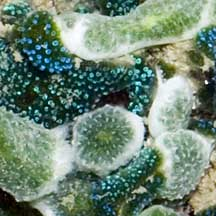 |
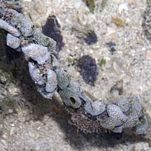 Terumbu Raya, May 10 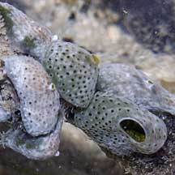 |
*Species are difficult to positively identify without examination of internal parts.
On this website, they are grouped by external features for convenience of display.
| Green gum drops ascidians on Singapore shores |
On wildsingapore
flickr
|
| Other sightings on Singapore shores |
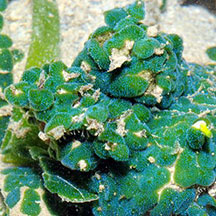 Terumbu Pempang Laut, Apr 11 Photo shared by Loh Kok Sheng on flickr. |
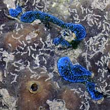 Pulau Sudong, Dec 09 |
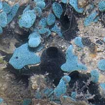 Pulau Senang, Aug 10 |
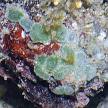 Pulau Biola, May 10 |
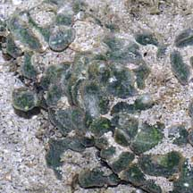 Pulau Senang, Jun 10 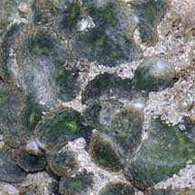 |
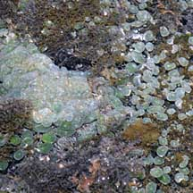 Pulau Salu, Jun 10 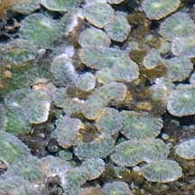 |
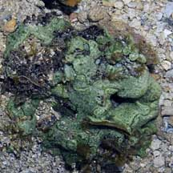 Pulau Berkas, May 10 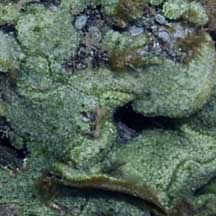 |
Acknowledgements Links
|